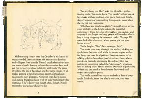

|
Jack Toresal and The Secret Letter |
|
Textfyre's
first commercial Interactive Fiction game was released
on June 26th, 2009. Set in the town of Toresal in
the kingdom of Miradania, Secret Letter is an adventure
about a fourteen year old orphan that everyone knows
as "Jack". Jack is pulled into a dangerous mystery
when a handful of Baron Fossville's mercenaries
begin hunting him. From Grubber's Market through
Commerce Street, and onto Lord's Keep; Jack is faced
with numerous challenges. Teisha lends a hand along
the way, as does Bobby, the mysterious boy always
lurking in Lord's Market. The ladies at Maiden House
are helpful, but can sometimes be a bit overbearing.
The shopkeepers are always willing to chat about
the latest gossip. Jack, he just wants to sit down
and eat an apple.
|
|
The Shadow in the Cathedral |
|
 Textfyre's
second commercial Interactive Fiction game will
be released on September 25th, 2009. The first episode
in the Klockwerk Series; Shadow begins an adventure
in a world of clocks, gears and ornithopters. You
are Wren, 2nd assistant clock-polisher. It's not
a very important job, but it offers a place to sleep
and bread to eat. You just wish you could someday
make it to 1st assistant clock-polisher. Before
too long though you are faced with blasphemy and
intrigue within the church. Who was that shadowy
figure talking to the Abbott? The mystery unravels
in just a few weeks. Textfyre's
second commercial Interactive Fiction game will
be released on September 25th, 2009. The first episode
in the Klockwerk Series; Shadow begins an adventure
in a world of clocks, gears and ornithopters. You
are Wren, 2nd assistant clock-polisher. It's not
a very important job, but it offers a place to sleep
and bread to eat. You just wish you could someday
make it to 1st assistant clock-polisher. Before
too long though you are faced with blasphemy and
intrigue within the church. Who was that shadowy
figure talking to the Abbott? The mystery unravels
in just a few weeks.
|
|
The Textfyre Book

July 20, 2009 - Textfyre spent eighteen months developing the book interface
used in our Interactive Fiction games. With the help of Will Capellaro's design (freelance art director) and Thomas Lynge's (Tenteo.Com) Silverlight programming skills, we were able to create
a user experience that emerses the game player into the story, much like a book.
|